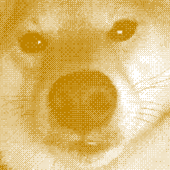
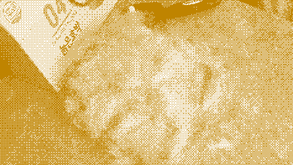
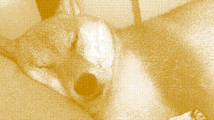
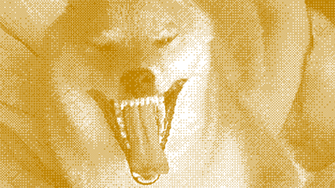

휴학의 행복을 누리며 공기 좋은 지방으로 정착한지 언 3개월. 풀숲을 따라 걷는 길, 풀 음과 완벽한 햇살이 나를 반긴다. 세상 모든 것이 아름다워 보이고 그 무엇도 나를 재촉하지 않는 세상이 너무 아름답다. 이게 바로 자유라는 것인가… 킁카~
“어이”
“키워”
“...네?”
“키우라고”
실버 푸들, 실버 푸들 노래를 부르시는 부모님 계셨기에 언젠가 강아지를 키우고 싶다는 생각은 가끔 했었던 적이 있었다. 거리다 혼자 방구석에 박혀있으니 외롭기도 했고 적적하던 집 분위기도 훨씬 생기가 넘치리라 긍정 회로를 돌려봤지만 폭풍 서치 결과 연관검색어에 나오는 시바견 털 빠짐, 엄살, 비명, 성질 등… 썩 좋지 않은 키워드로 나를 반기 고야 만다. 거기다 엄연한 생명체이기에 신중하게 생각해서 평생 책임질 각오를 하고 키워야 하기 때문에 나는 눈을 감은 채 생각했다.
그렇게 눈을 뜨고 보니 곰돌이의 탈을 쓴 시바의 유혹에 나의 손에는 시바이누가 담긴 박스가 들려있었다.
하지만 그때는 몰랐다.
그 작고 귀여운 곰돌이가 시바새끼(욕 아님)로 진화할 줄은…
1. 공포의 주둥이
2. 시바패딩 팝니다
3. 아빠 안 잔다
4. 강아지계 소찬휘
존재 자체만으로도 우리 집은 오늘도 웃음이 끊기지 않는다. 말이 점점 줄어드는 환경 속에서 녀석의 등장 이후 오가는 말이 늘었고 녀석을 이유로 거실에 나와 가족끼리 모이는 시간이 많아졌다.
여러분들도 둥글둥글 시바이누를 한 번 키워본다면 마성의 매력에 빠져나오지 못할 것이다. 때로는 소리를 지르기도 하며 가끔 주인을 무시하기도 하지만 나를 귀찮게 하지 않고 고양이처럼 새침한 매력을 가진 가끔 엉뚱하고 귀여운 강아지를 찾는다면 시바이누를 강력히 추천하는 바이다.
마지막으로
시루야 맛있는 거 많이 먹고 건강하게 오래오래 살자!